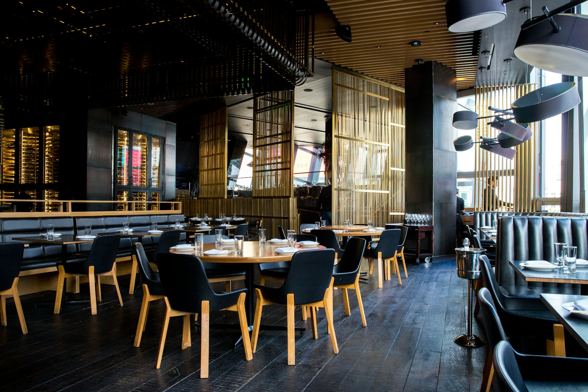

Három változat ugyanazzal a tartalommal, hogy legyen miből választani. Mindegyik telefonon is jól működik. Ez bemutató, nem a hivatalos oldaluk: a fotók illusztrációk, a véglegesre az Önökéi kerülnének.

Nagy fotó, meleg hangvétel, minden a helyén. A legbiztosabb választás, ha jó fotóik vannak.
Megnyitás →Sötét, nagybetűs, magazinos. Kitűnik a többi helyi oldal közül.
Megnyitás →Kevés kép, sok levegő, villámgyors. Telefonon ez tölt be a leggyorsabban, és sose megy ki a divatból.
Megnyitás →